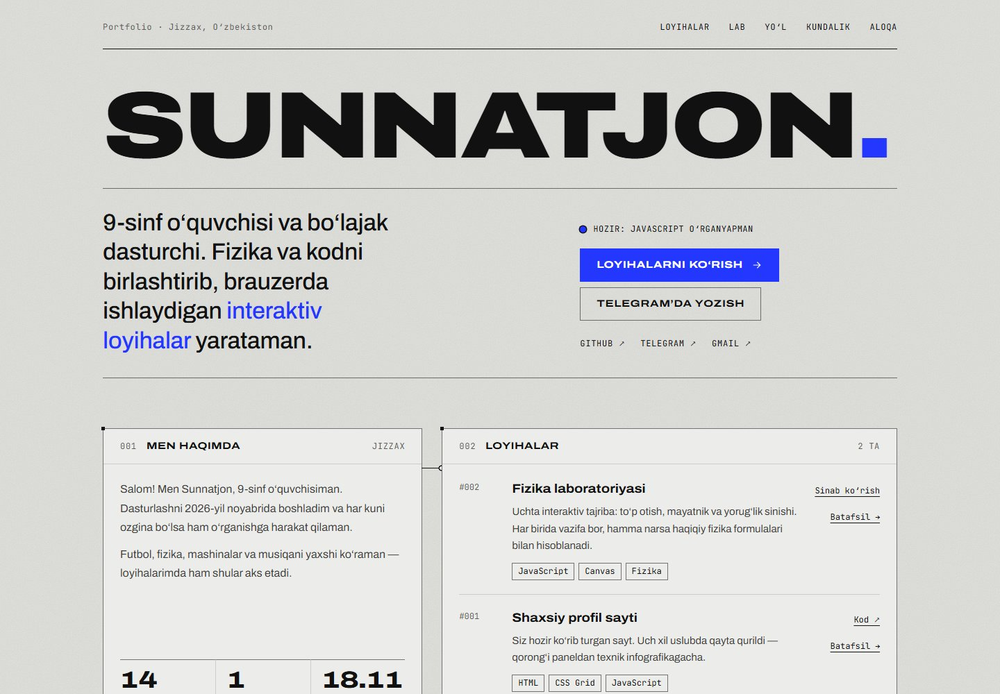

Maqsad
Dasturchi bo‘lish yo‘lidagi birinchi amaliy ishim. Do‘stlarimga o‘zim haqimda, qiziqishlarim va o‘rganayotganlarim haqida aytib beradigan joy kerak edi — va uni o‘zim qurib, jarayonda o‘rganmoqchi edim.
Jarayon: bir necha marta qayta
- 13.11 — birinchi versiya. To‘q bordo rangli “poster” uslubi. Sayt ishladi, lekin o‘zimga 6/10 ga yoqdi.
- 15.11 — ko‘k dizayn. Ranglarni CSS o‘zgaruvchilari orqali bir joyda almashtirdim.
- 16.11 — qorong‘i panel. Nuqtali shriftli “dashboard” sinab ko‘rildi va rad etildi — menga yoqmadi.
- 16.11 — texnik infografika. Och fon, ingichka chiziqlar, 12 ustunli to‘r. Shu uslubda qoldim.
- Professional bosqich. Bezak raqamlar olib tashlandi, loyihalar oldinga chiqdi, shu sahifa paydo bo‘ldi.
Muhim qarorlar
Maxfiylik birinchi o‘rinda
Sayt ochiq, uni istalgan odam ko‘rishi mumkin. Shuning uchun suratim olib tashlandi, telefon raqami o‘rniga Telegram qo‘yildi, manzil esa faqat “Jizzax, O‘zbekiston” deb ko‘rsatiladi.
Faqat haqiqiy ma’lumot
Avval saytda “Dasturlash 99%” kabi foizlar va o‘ylab topilgan grafiklar bor edi. Ko‘nikmani foiz bilan o‘lchab bo‘lmaydi, shuning uchun ular halol darajalarga (tanishman / o‘rganyapman / rejada) almashtirildi. Commitlar soni esa GitHub’dan avtomatik olinadi.
Framework’siz
Hech qanday kutubxona yoki o‘rnatish yo‘q — oddiy HTML, CSS va JavaScript. Shunda har bir qator nima qilishini tushunish osonroq.
Hamma uchun qulay
Yozuvlar fonga nisbatan yetarlicha kontrastli, sayt klaviatura bilan boshqariladi, animatsiyani yoqtirmaydiganlar uchun harakatsiz rejim bor, telefonda esa hammasi bitta ustunga tushadi.
Nimani o‘rgandim
- HTML — sahifaning skeleti, CSS — kiyimi, JavaScript — miyasi.
- Dizayn bir urinishda chiqmaydi: referens yig‘ish va bir necha marta qayta qilish — normal jarayon.
- Git kodning har bir versiyasini saqlaydi, shuning uchun xato qilishdan qo‘rqmasa bo‘ladi.